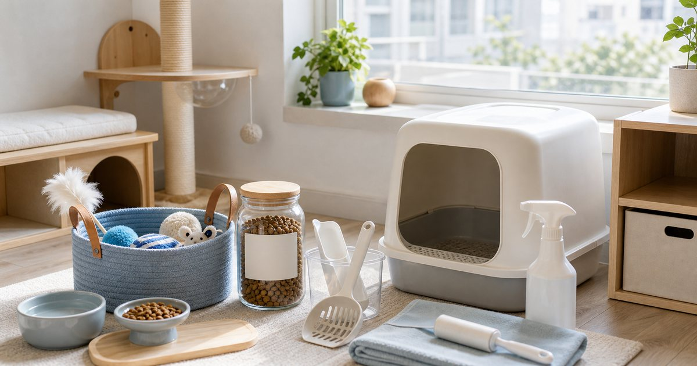

Elite Fashion｜貓咪生活整理：貓砂、玩具、食品與居家清潔的採買順序
貓咪用品要先看家中動線。貓砂、玩具、食品和清潔用品各有位置，分區後才不會每次補貨都像重新開局。

先畫貓咪生活區：吃、玩、上廁所、清潔
貓咪用品先依區域整理，而不是依品牌整理。吃飯區、玩耍區、砂盆區和清潔區分開後，補貨就會清楚很多。
可以把 愛貓聯盟、愛貓聯萌、有喵病、尾巴丘、Mommywant 與淨淨 Clean Clean 放在同一個生活情境裡比較，但要先分清楚用途。編輯部會看保存、尺寸、清潔、是否容易收納、是否適合家中成員共同使用，而不是把清單寫成越多越完整。
比較穩妥的順序是先確認 家裡哪裡是食品區、哪裡是砂盆區、清潔用品放哪裡。常見失誤是 把所有貓用品塞在同一櫃子，拿取時總是混亂；在 小宅、租屋、多貓家庭與開放式客廳 裡，能被穩定使用、容易補貨、看得懂限制的品項，通常比一次買很多更實際。
- 食品和清潔用品分開放。
- 砂盆旁只放會立即使用的用品。
貓砂區要看清理頻率與通風
貓砂相關用品不只看種類，也要看清理工具、垃圾袋、通風和走道。砂盆周圍最好不要塞太多裝飾物。
可以把 愛貓聯盟、愛貓聯萌、有喵病與 Mommywant 放在同一個生活情境裡比較，但要先分清楚用途。編輯部會看保存、尺寸、清潔、是否容易收納、是否適合家中成員共同使用，而不是把清單寫成越多越完整。
比較穩妥的順序是先確認 清理頻率、砂盆位置與附近是否好打掃。常見失誤是 買了很多周邊，卻讓砂盆區更難清理；在 浴室外、陽台、客廳角落與多貓動線 裡，能被穩定使用、容易補貨、看得懂限制的品項，通常比一次買很多更實際。
- 砂盆周圍留出清理空間。
- 清理工具放近，但和食品分開。
玩具要輪替，不必一次全拿出來
貓玩具如果全部攤在地上，很快就失去新鮮感，也讓家裡看起來凌亂。輪替收納比一直買新玩具更好管理。
可以把 有喵病、尾巴丘、愛貓聯盟與愛貓聯萌 放在同一個生活情境裡比較，但要先分清楚用途。編輯部會看保存、尺寸、清潔、是否容易收納、是否適合家中成員共同使用，而不是把清單寫成越多越完整。
比較穩妥的順序是先確認 哪些玩具會被玩、哪些只是佔空間。常見失誤是 看到可愛玩具就買，卻沒有收納和輪替；在 客廳、書房與窗邊活動區 裡，能被穩定使用、容易補貨、看得懂限制的品項，通常比一次買很多更實際。
- 玩具用小籃分批輪替。
- 破損或太久沒玩的玩具定期整理。
食品保存要留原包裝資訊
貓咪食品若要分裝，仍應保留原包裝資訊、日期與保存方式。透明罐好看，但資訊不能不見。
可以把 尾巴丘、愛貓聯盟、愛貓聯萌與 Mommywant 放在同一個生活情境裡比較，但要先分清楚用途。編輯部會看保存、尺寸、清潔、是否容易收納、是否適合家中成員共同使用，而不是把清單寫成越多越完整。
比較穩妥的順序是先確認 保存期限、開封日與是否容易受潮。常見失誤是 只追求收納美觀，丟掉重要標示；在 廚房櫃、餐區旁收納與多貓家庭 裡，能被穩定使用、容易補貨、看得懂限制的品項，通常比一次買很多更實際。
- 分裝後貼上日期和品名。
- 不同食品不要混裝。
清潔用品要配合貓咪活動範圍
貓咪生活清潔不是只清砂盆。地板、沙發、窗邊、餐區和玩具籃都可能需要固定整理。
可以把 淨淨 Clean Clean、Mommywant、尾巴丘與有喵病 放在同一個生活情境裡比較，但要先分清楚用途。編輯部會看保存、尺寸、清潔、是否容易收納、是否適合家中成員共同使用，而不是把清單寫成越多越完整。
比較穩妥的順序是先確認 家中哪個位置最常需要清理、用品是否容易拿到。常見失誤是 清潔用品放太遠，最後只在大掃除時才用；在 小宅地板、布沙發與貓咪窗邊 裡，能被穩定使用、容易補貨、看得懂限制的品項，通常比一次買很多更實際。
- 清潔用品放在成人容易拿到的位置。
- 清潔用品使用方式依商品標示為準。
採買順序：砂盆與食品先穩，再補玩具和小物
貓咪採買最穩的順序，是先確保砂盆和食品管理，再補玩具、清潔小物與外出用品。基本動線穩了，家裡才不會越買越亂。
可以把 愛貓聯盟、愛貓聯萌、有喵病、尾巴丘、Mommywant 與淨淨 Clean Clean 放在同一個生活情境裡比較，但要先分清楚用途。編輯部會看保存、尺寸、清潔、是否容易收納、是否適合家中成員共同使用，而不是把清單寫成越多越完整。
比較穩妥的順序是先確認 哪些品項每週一定會消耗、哪些只是偶爾使用。常見失誤是 先買可愛小物，基本補貨卻常常臨時缺；在 新手貓家庭、搬家後重新整理與多貓共住 裡，能被穩定使用、容易補貨、看得懂限制的品項，通常比一次買很多更實際。
- 每週消耗品先列清楚。
- 玩具和小物等基本區域穩定後再補。
FAQ
貓咪用品應該集中放同一櫃嗎？
不一定。食品、砂盆用品、玩具與清潔用品用途不同，分區通常更容易管理。
玩具越多貓咪越開心嗎？
不一定。玩具輪替和收納更重要，全部攤開反而容易凌亂。
食品分裝後要注意什麼？
應保留品名、開封日、保存期限與原包裝資訊，避免只追求收納美觀。
下一步建議
如果你正在整理貓咪用品，可以先把食品、砂盆、玩具和清潔用品各自分區。
重要警語
本文為一般貓咪用品收納與採買情境整理，不構成營養、行為或照護建議。寵物食品與用品請依商品標示、寵物狀況與專業建議使用。
本文含品牌／商品導購連結；若你透過部分商品連結前往選購，Elite Fashion 可能取得合作收益。本文仍以編輯判斷與使用情境整理為主，價格、規格、活動與庫存請以商品頁公告為準。